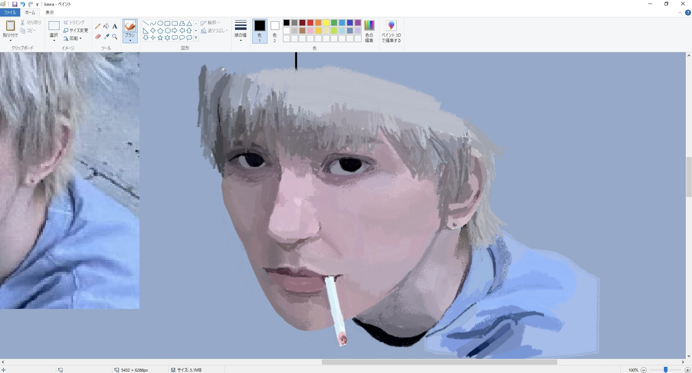

✦趣味˚.☆⋆
私の趣味はゲームをする事と絵を描くことです。
この二つの趣味を一つずつ紹介していこうと思います。
まず普段描いている絵について紹介していきます。
物心ついたころから絵を描くことに興味があって、中学校では美術部に入っていました。
最近は他の趣味に偏ってしまって絵を描く機会は少なくなってしまいましたが、
中学や高校生の頃はよく家で絵を描いていました。
これはマウスで描いた模写です。随分前に描いたものですが気に入っています。
二つ目はゲームについて紹介します。
スマホやプレステ、switch等どんな機種でも楽しめますが普段はPCでゲームをしています。
その中でも最近気に入っているTerrariaというゲームを紹介します。
このゲームは２０１１年から発売された１６ビットゲームのようなドットによる２Ｄのゲームです。
自動生成された世界の中でプレイヤーが建築して家を作ったり、武器や防具でモンスターを倒したり、
NPCと交渉してアイテムを集めたり、、など自由度の高いワールドのなかで自由に動き回ることができます。

やることがたくさんあるので、安価で買える割に長い時間楽しめます。